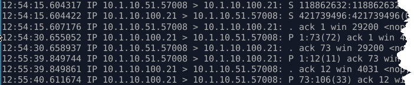
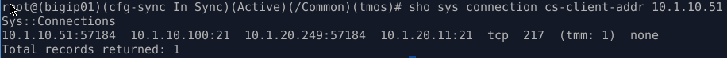

Unofficial - F5 Certification Exam Prep Material > F5 201 - TMOS Administration Labs 08/11/2020 > Lab 1 – Accessing the Lab, Networking and BIG-IP Traffic Flow Source | Edit on
Packet Processing Lab¶
Open BIG-IP TMSH and TCPDump session¶
In this task, you will open two SSH sessions to the BIG-IP. One for TMSH commands and the other for a tcpdump of the client-side network.
Open a terminal window (window1) from the shortcut bar at the bottom of the jumpbox.
ssh root@10.1.1.4
password: f5UDFrocks!
Use tcpdump to monitor traffic from the client (10.1.10.6) destined to ftp_vs (10.1.10.100)
tcpdump -nni client_vlan host 10.1.10.6 and 10.1.10.100
Open another terminal window (window2) and use tmsh to display the connection table.
ssh root@10.1.1.4
tmsh
At the TMOS prompt (tmos)#
TMSH
show sys connection type any
Do you see any connections from the jumpbox 10.1.1.6 to 10.1.1.245:22 in the connection table?
Q1. Why are the ssh management sessions to 10.1.1.4 not displayed in connection table?
Establish ftp connection¶
In this task you will open a third terminal window and establish an FTP session through the ftp_vs virtual server. With the connection remaining open you will view the results in window1 (tcpdump) and window2 (tmsh).
Open a third command/terminal window (window3).
ftp 10.1.10.100
In the first terminal window ( window1) you should see something similar to the tcpdump captured below.
Q1. In the tcpdump above, what is client IP address and port and the server IP address port?
In window2 (tmsh) run the show sys conn again, but strain out the noise of other connections (mirrored and selfIP) by just looking at connections from your jumpbox.
show sys conn cs-client-addr 10.1.10.6
The connection table on window2 will show the client-side and server-side connection similar to below:
Q2. What is source ip and port as seen by ftp server in the example above?
Q3. What happened to the original client IP address and where did 10.1.20.249 come from?
Hint
You will have to review the configuration of ftp_vs to determine the answer to question 3.